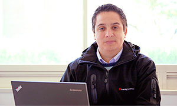

Equipo AIT
El equipo de trabajo de AIT está compuesto por profesionales cuyos objetivos se centran en desarrollar las potencialidades de los convenios administrados por esta unidad, a nivel de impacto en planes de estudios, capacitación de docentes y participación en distintas actividades de difusión de los mismos. De esta manera, se logra una activa vinculación con estas empresas líderes en desarrollo de soluciones tecnológicas.
Hugo Barriga Rebolledo
Administrador Academias IT

Mauricio Mora Dalmazzo
Ingeniero en Networking
Jorge Barrios Puebla
Ingeniero en Infraestructura
Christian Sarmiento Zampillo
Ingeniero en Desarrollo
Osvaldo Lara Chávez
Jefe de Convenios